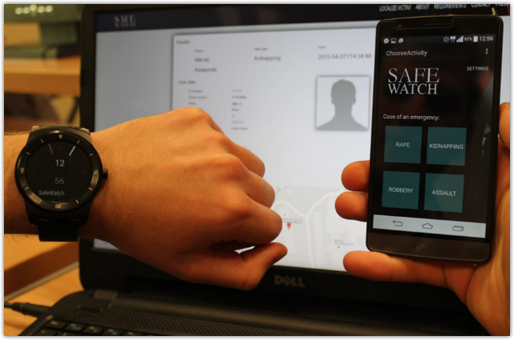
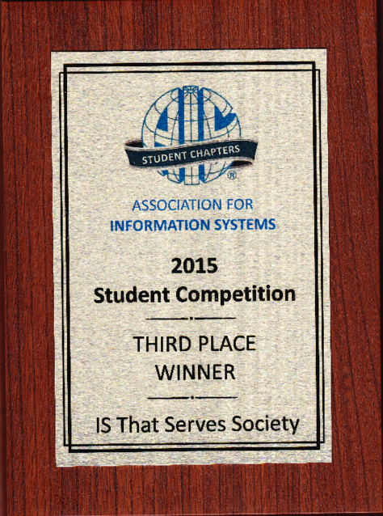
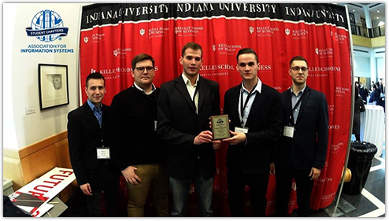
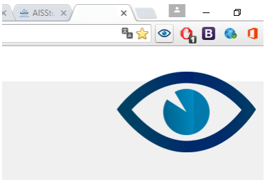
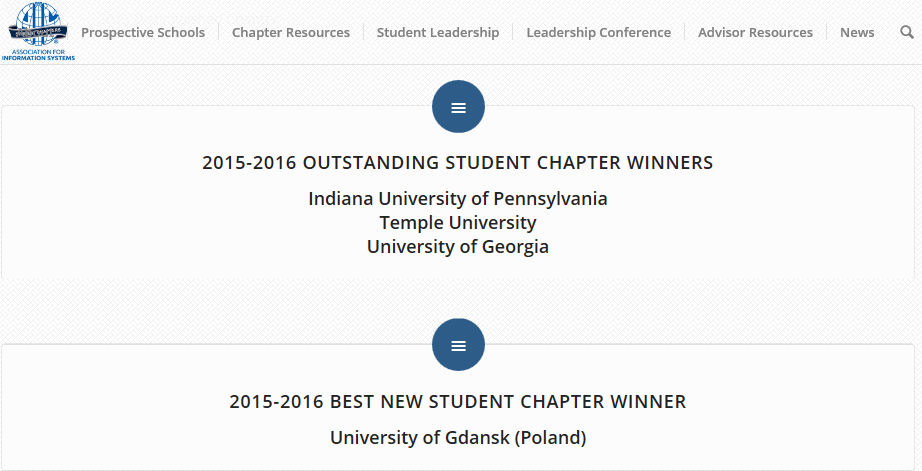
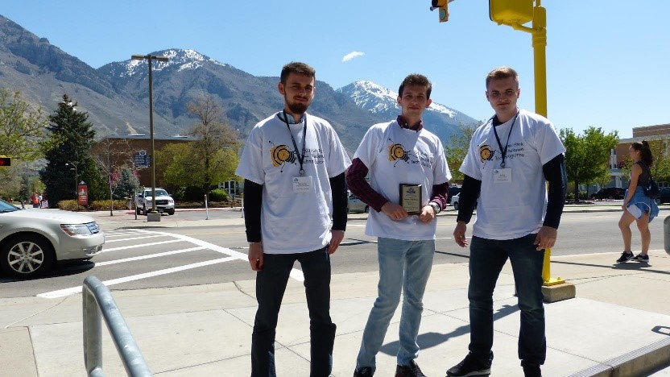
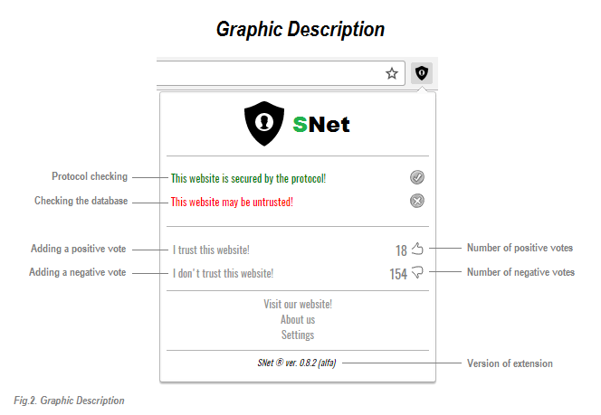
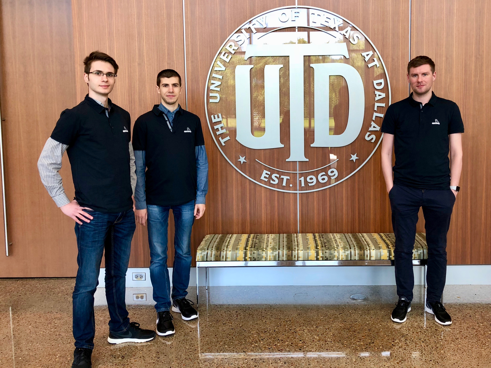
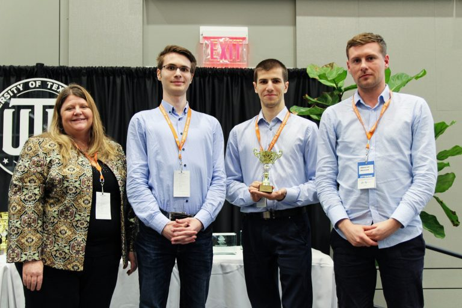

2015
SafeWatch is an innovative solution that allows you to call for help in an emergency situation in a discreet manner. The application is dedicated for mobile devices of smartphones and smartwatches. At the time of an emergency the user using the defined gestures (for example three light device strokes) initiates emergency call. The application informs about the incident previously designated person. All information such as location and time of the call are transmitted to the server, where it is made available to the Police. The content includes all the necessary information about the calling and its current location, so the response time to initiate the rescue operation can be minimized.
The team creating a solution SafeWatch has qualified in 2015 for the grand finals of the Association for Information Systems Student Chapters Competition in the United States in Alabama. During the final gala held at the University of Alabama, members of the scientific circle E-XPERT (Kamil Wojewski - team leader, Damian Kisielewski, Maciej Kwapiński, Simon Nagórski and Hubert Kisielewski) presented a prototype of proprietary solution. The project SafeWatch caused a great enthusiasm both the jury and audience of the contest, finally achieving third place in category “Information System that Serves Society”.
Your Guard
Your Guard is a system of digital map crime to track dangerous places, where there are frequent robberies or crimes. The team (Michael Karpinski, Tomasz Krakowka and Peter Sankowski) in 2015 qualified for the finals of the Association for Information Systems Student Chapter Competition in the category of “Information Systems That Serve Society”.
2016
CyberWatch is a system that is used to recognize acts of cyberbullying on the Internet, such as pejorative social communication (messages, comments), broadcasting false information, stalking and forcing undesirable behavior. This extension of web browser integrates the latest technology of processing of content on the Web, such as distributed web service Watson, REST approach and Cloud computing. These technologies allowed to develop a comprehensive, cross-platform solution for different types of applications: web, mobile and desktop. The project team at the beginning of 2016 qualified for the finals of “IBM Bright ICT” cathegory, organized by the global corporation IBM in partnership with the AIS SC. Team members (Kamil Wojewski - team leader, Damian Kisielewski, Maciej Kwapiński, Simon Nagórski and Hubert Kisielewski) participated in the final competition, which was held on 01-03.04.2016 at Indiana University in the United States. CyberWatch was awarded third place and received the award as a system that makes the most efficient use of IBM technology Bluemix Cloud.
Unity
Unity is a project developed by Piotr Małecki. The web application allows you to search in the Internet positive and negative opinions about people and organizations. Moreover it allows for constant monitoring of the structure of assessments. The proposed solution can be used to constantly monitor person's or organization’s reputation or image, and allows for a quick contact with publisher for rectification of posted comments. Monitoring system integrates cloud computing technologies of IBM Bluemix and Alchemy API. The jury of IBM Bright ICT appreciated the innovative use of services IBM Bluemix giving the project Unity award for the most innovative use of technology in the IBM cloud.

Best New AIS SC Chapter
Association of Information Systems Student Chapter of University of Gdansk (AIS SC UG) received award “2015-2016 BEST NEW AIS STUDENT CHAPTER WINNER” for the results of the actions in the first two years of activity.

2017

SNet (Safe Internet), an easy to use browser extension. It protects an ordinary user from scam hyperlinks and dangerous websites by checking their URL address in database whether: it is secured by the SSL protocol, it does exist in constantly updated database with a list of dangerous websites addresses, with indication of their threat level. The database of dangerous websites and links is created by feedback from the users having installed SNet, based on their past experience on websites. Any user can contribute, even if they do not have much knowledge about Information Technology.

2018

IBMS (Intelligent baby monitor system) is IT solution that allows for remote monitoring of the child and its environment, through a camera and sensors. Notifications and warnings are automatically sent to a cross-platform mobile application.
